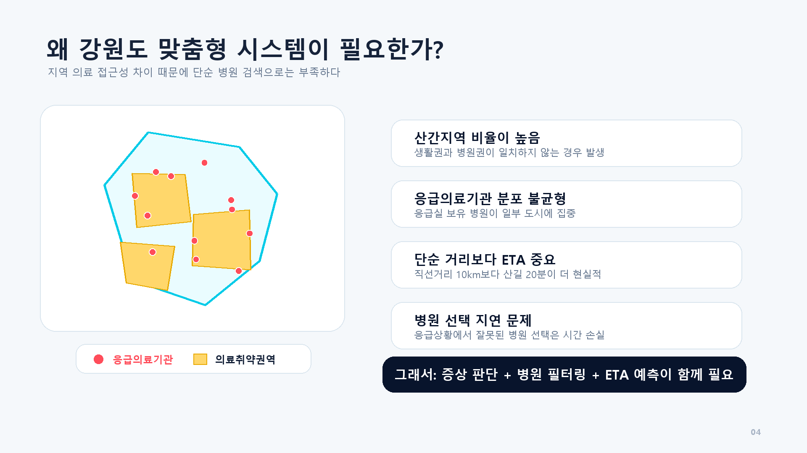
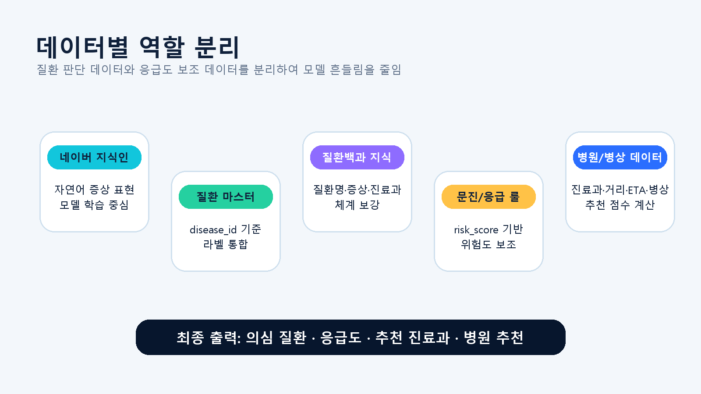
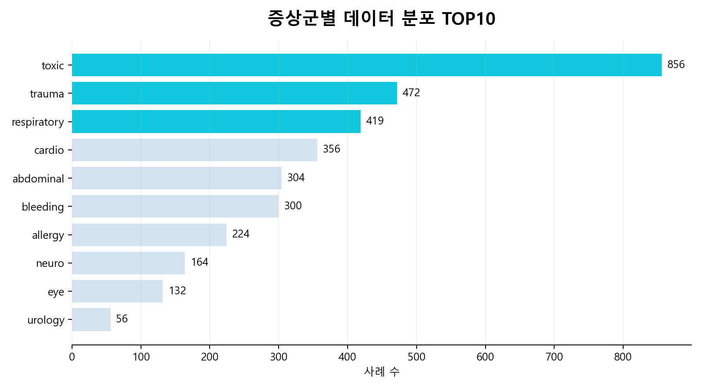
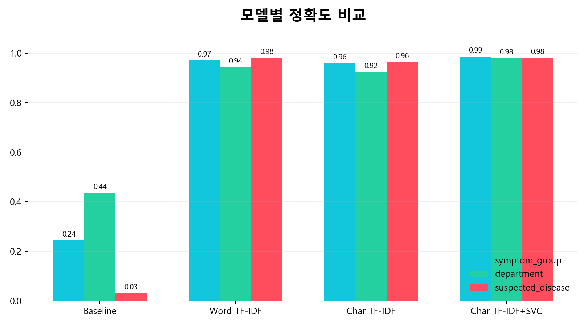
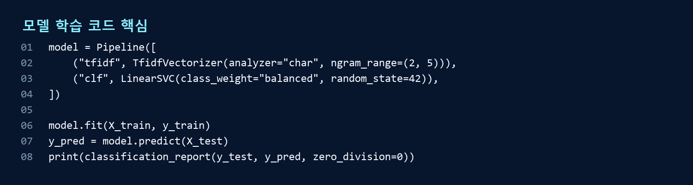
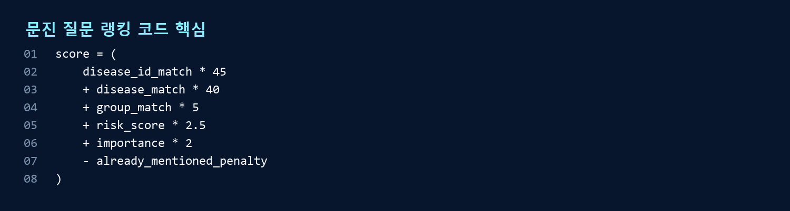
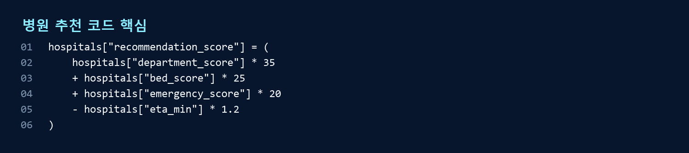
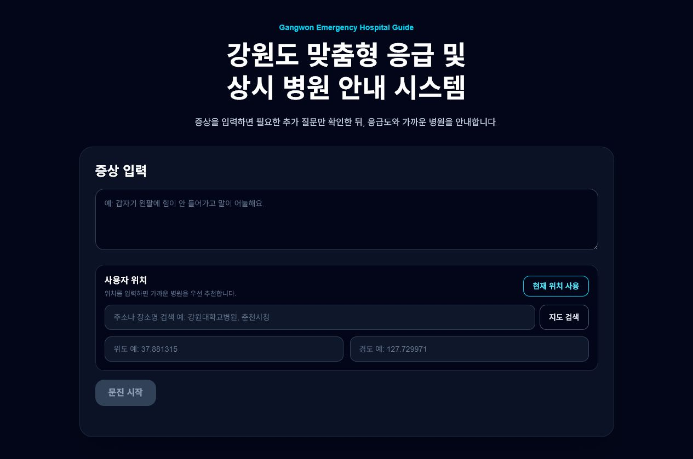
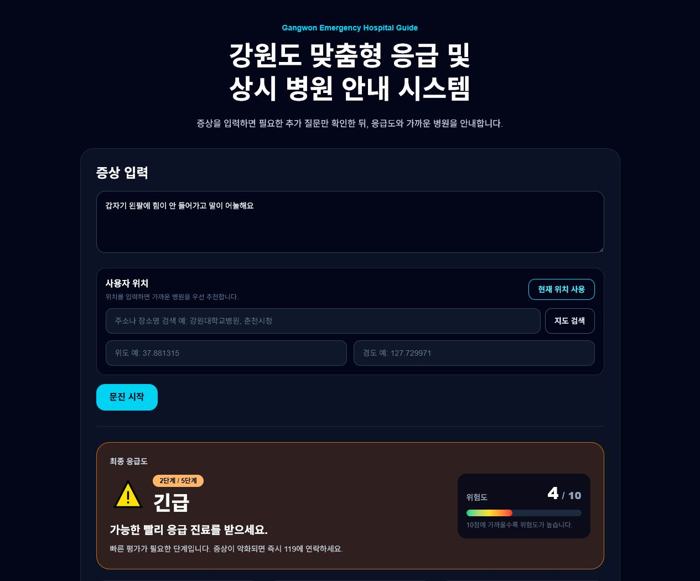

자연어 증상 분류 모델과 실시간 병원 추천 데이터를 결합한 데이터마이닝 프로젝트
제출 형식: 팀 보고서 / GitHub 코드 제출 / PDF
핵심 키워드: 네이버 지식인 증상 데이터, disease_master, symptom_classifier.pkl, 질환별 문진, 응급도 계산, 병원 추천
GitHub: ironlife827-boop/gangwon-emergency-hospital-guide
본 프로젝트는 강원도 지역 사용자가 자연어로 증상을 입력하면 의심 질환, 추천 진료과, 응급도, 주변 병원을 안내하는 웹 서비스를 구현하는 것을 목표로 한다. 단순 병원 검색이 아니라 증상 → 질환 후보 → 질환별 문진 → 위험도 계산 → 병원 추천을 하나의 흐름으로 연결한다.
타깃층은 야간·주말 또는 낯선 지역에서 병원 선택이 어려운 강원도 거주자와 방문자이다. 응급 상황에서는 사용자가 자신의 증상은 설명할 수 있어도 진료과와 병원 선택은 어렵다. 공공 응급의료 API가 실시간 가용병상 정보를 제공한다는 점은 병원 추천에 활용할 수 있는 중요한 근거가 된다[3].
자연어 증상 학습 데이터
질환명·별칭·진료과 통합
상시/응급 병원 추천 기반
본 시스템은 의료 진단을 대체하지 않으며, 응급도와 병원 선택을 돕는 의사결정 보조 시스템으로 정의하였다.
사용자는 증상을 입력하고 위치를 설정한다. 백엔드는 학습된 symptom_classifier.pkl을 우선 사용하여 증상군, 진료과, 의심 질환 TOP3를 예측한다. 이후 disease_question_map에서 질환별 질문을 랭킹하여 최소 1~4개의 문진만 제시한다.

응급도는 질환 예측 모델이 아니라 red flag와 문진 답변의 risk_score로 별도 계산한다. 이 구조는 질환 판단 데이터와 응급도 보조 데이터를 분리하기 위한 설계이다.
데이터는 네이버 지식인 증상 사례, 질환 마스터, 질환별 문진 질문, 응급 문진 룰, 병원 기본정보, 응급 병상 데이터로 구성했다. 네이버 지식인은 실제 사용자들이 작성하는 자연어 증상 표현을 확보하기 위해 사용했다.
| 데이터 | 규모 | 활용 목적 |
|---|---|---|
| 네이버 지식인 증상 사례 | 3,499건 | 자연어 증상 표현 학습 |
| disease_master | 149개 질환 | 질환명·별칭·진료과 통합 |
| disease_question_map | 532문항 | 질환별 추가 문진 후보 |
| triage_rule_dataset | 113개 룰 | 응급도 risk_score 보조 |
| hospital_master | 1,994개 병원 | 상시/응급 병원 추천 |
| gangwon_hospital_with_beds | 24개 응급기관 | 응급 병상 fallback |
서울아산병원 질환백과는 원문을 학습 데이터로 그대로 넣기보다 질환명, 증상, 관련 진료과 체계를 보강하는 기준으로 사용했다[5]. 카카오 로컬 API는 위치 검색, 카카오모빌리티 길찾기 API는 ETA 계산, 공공데이터 EGEN API는 응급실 병상 조회에 활용했다[1]-[4].
정제 과정에서는 비의료성 텍스트, 동물 관련 질문, 꿈 해몽, 법률 상담 등 증상 분류 목적과 맞지 않는 사례를 제거했다. 이후 cleaned_text와 symptom_keywords를 입력 피처로 구성하고, symptom_group, department, suspected_disease를 예측 대상으로 구성했다.

특히 같은 질환이 여러 이름으로 나타나는 문제를 줄이기 위해 disease_master.csv를 만들고 disease_id 기준으로 통합했다. 예를 들어 ‘심근경색’, ‘급성 심근경색’, ‘AMI’는 같은 disease_id로 연결한다. 이 매핑 구조는 부록 B의 GitHub 파일 구조와 함께 확인할 수 있다.
데이터 탐색에서는 증상군, 진료과, 질환 라벨 분포를 확인했다. 아래 그래프는 상위 10개 증상군 분포를 나타낸다. toxic, trauma, respiratory, cardio, abdominal 등 응급성과 일반 질환이 함께 존재한다.

이 분포는 모델 선정의 근거가 된다. 질환명 라벨 수가 많고 한국어 문장 표현이 다양하므로 단순 키워드 매칭보다 문자 n-gram 기반 TF-IDF 모델이 유리하다고 판단했다. 또한 데이터 편중이 존재하므로 baseline 모델과 비교해 실제 학습 효과를 검증했다.
모델은 자연어 증상 문장을 입력받아 symptom_group, department, suspected_disease를 예측한다. 학습 과정에서는 majority baseline, word TF-IDF + Logistic Regression, char TF-IDF + Logistic Regression, char TF-IDF + Linear SVC를 비교했다.

| Target | Best model | Accuracy | Macro F1 | Classes |
|---|---|---|---|---|
| symptom_group | char_tfidf_linear_svc | 0.9871 | 0.9827 | 20 |
| department | char_tfidf_linear_svc | 0.9800 | 0.9657 | 18 |
| suspected_disease | word_tfidf_logreg | 0.9814 | 0.9536 | 121 |
질환명 예측은 121개 클래스를 대상으로 하며, 단순 baseline 대비 TF-IDF 기반 모델에서 큰 성능 향상을 보였다. 자세한 분류 리포트는 부록 C 및 docs/symptom_classifier_evaluation.md에 정리했다.
모델 학습 코드는 data_pipeline/symptom_model/train_symptom_classifier.py에 위치한다. 아래 코드는 char n-gram TF-IDF로 한국어 증상 문장의 부분 문자열 패턴을 반영하고, LinearSVC 분류기로 라벨을 예측하는 핵심 구조이다.

이 방식은 띄어쓰기 오류, 조사 변화, 짧은 증상 표현이 많은 한국어 사용자 입력에서 단어 단위보다 안정적으로 작동한다. 모델 결과는 진단이 아니라 의심 질환 후보로 사용되며, 이후 문진과 응급도 계산으로 보정된다.
추가 문진은 모든 사용자에게 고정 질문을 제공하지 않는다. 모델이 예측한 disease_id와 symptom_group을 기준으로 disease_question_map 후보를 불러온 뒤, 질환 일치 점수, 증상군 일치 점수, risk_score, importance를 합산하고 이미 입력한 정보는 패널티를 적용한다.

응급도는 문진 답변의 risk_score와 red flag를 기준으로 10점 만점 위험 점수를 계산한 뒤 1~5단계로 변환한다. 예를 들어 호흡곤란, 의식저하, 편마비, 흉통은 모델 신뢰도와 무관하게 위험도를 높이는 안전 장치로 작동한다.
병원 추천은 거리만 사용하지 않는다. 진료과 매칭, 응급기관 여부, 가용 병상, ETA를 함께 반영한다. 가용 병상이 0개인 병원은 가까워도 우선순위를 낮추도록 설계했다.

외부 API는 모델 판단을 대신하지 않고 위치와 실시간성을 보완한다. Kakao Local API는 주소·장소 검색, Kakao Mobility API는 경로와 이동 시간 계산, 공공데이터 EGEN API는 실시간 응급 병상 조회에 사용한다. API 실패 시 정적 CSV 또는 ETA 모델로 fallback한다.
최종 시스템은 사용자가 증상을 입력하면 문진, 분석, 병원 추천을 하나의 화면에서 제공한다. UI는 내부 추천 점수보다 사용자가 바로 이해해야 하는 응급도, 의심 질환, 진료과, 병원 정보를 중심으로 구성했다.


사용 시나리오는 다음과 같다. 사용자가 “갑자기 한쪽 팔에 힘이 빠지고 말이 어눌해졌습니다”라고 입력하면 모델은 신경계·뇌졸중 후보를 예측하고, 뇌졸중 전용 문진을 제시한다. 이후 응급도를 높게 계산하고 응급의학과 또는 관련 응급기관을 추천한다.
실행 검증 결과 모델 로드, mapped CSV 로딩, backend 실행, smoke test, 주요 API 응답은 모두 PASS였다. 세부 결과는 부록 C에 제시하였다.
| 단계 | 작업 | 산출물 |
|---|---|---|
| 1 | 문제 정의 및 요구사항 정리 | 프로젝트 목표, 평가 기준 대응 |
| 2 | 데이터 수집 | 네이버 지식인 증상 사례, 병원/병상 데이터 |
| 3 | 전처리 및 라벨 통합 | cleaned_text, disease_master, mapped CSV |
| 4 | 모델 학습 및 평가 | symptom_classifier.pkl, 모델 비교표 |
| 5 | 백엔드 구현 | FastAPI, 문진/응급도/추천 서비스 |
| 6 | 프론트 구현 | 증상 입력, 문진, 결과 UI |
| 7 | 검증 및 보고서 | validation report, 발표자료, 최종 보고서 |
| 역할 | 담당 내용 |
|---|---|
| 데이터 담당 | 수집 쿼리 설계, 정제 기준 수립, 라벨 매핑 |
| 모델 담당 | TF-IDF 모델 비교, 학습, 평가 리포트 작성 |
| 백엔드 담당 | 문진 선택, 응급도 계산, 병원 추천 API 구현 |
| 프론트 담당 | 사용자 입력/문진/결과 화면 구현 |
| 검증 담당 | smoke test, API 테스트, GitHub 구조 정리 |
GitHub 제출 시 분석 코드, 학습 코드, 전처리 코드, 서비스 코드가 구분되도록 정리했다. 과거 실험 자료는 삭제하지 않고 archive 하위로 이동해 혼동을 줄였다.
| 폴더 | 설명 |
|---|---|
| backend/ | FastAPI 라우터, 분석/문진/추천 서비스 |
| frontend/ | 사용자 입력, 문진, 결과 UI |
| data_pipeline/ | 수집·정제·라벨 매핑·학습 코드 |
| data/processed/ | 실제 서비스와 학습에 쓰는 CSV |
| models/ | symptom_classifier.pkl, eta_model.pkl |
| archive/ | 과거 실험/레거시 자료 보관 |
실제 서비스 핵심 파일은 models/symptom_classifier.pkl, data/disease_master.csv, data/processed/*_mapped.csv, backend/services/*.py, frontend/app/page.tsx이다.
| 검증 항목 | 결과 |
|---|---|
| 모델 로드 | PASS - symptom_classifier.pkl payload keys 확인 |
| disease_master 로딩 | PASS - 149 rows, unique disease_id 확인 |
| mapped CSV 로딩 | PASS - unknown disease_id 0건 |
| symptom_engine 실행 | PASS - 감기/respiratory/candidates=3 |
| 질문 선택 | PASS - 급성 심근경색 질문 3개 |
| backend 실행 | PASS - /health 응답 정상 |
| 주요 API 응답 | PASS - /triage/questions, /triage/analyze 정상 |
| smoke test | PASS - fail_lines=0 |
전체 검증 리포트는 reports/final_system_validation_report.md에 저장했다. 프로젝트는 의사결정 보조 시스템이므로 희귀 표현, 외부 API 장애, 공공데이터 최신성은 남은 위험 요소로 관리한다.
[1] Kakao Developers, “Local API Documentation,” Kakao Corp. [Online]. Available: https://developers.kakao.com/docs/ko/local/common
[2] Kakao Mobility Developers, “Driving Directions API,” Kakao Mobility. [Online]. Available: https://developers.kakaomobility.com/affiliate-en/navi-api/directions.html
[3] 공공데이터포털, “국립중앙의료원_전국 응급의료기관 정보 조회 서비스.” [Online]. Available: https://www.data.go.kr/data/15000563/openapi.do
[4] 공공데이터포털, “국립중앙의료원_전국 병·의원 찾기 서비스.” [Online]. Available: https://www.data.go.kr/data/15000736/openapi.do
[5] 서울아산병원, “질환백과 | 의료정보 | 건강정보.” [Online]. Available: https://www.amc.seoul.kr/asan/healthinfo/disease/diseaseSubmain.do
[6] scikit-learn developers, “TfidfVectorizer and LinearSVC Documentation.” [Online]. Available: https://scikit-learn.org/
[7] FastAPI, “FastAPI Documentation.” [Online]. Available: https://fastapi.tiangolo.com/